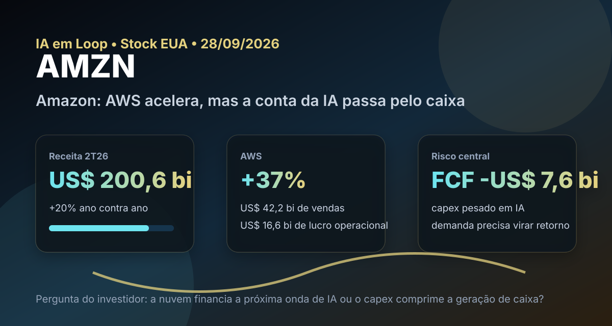

28/09: AMZN, Amazon e o teste entre AWS, IA e caixa
Amazon voltou ao radar porque a AWS acelerou justamente quando o mercado discute se a infraestrutura de inteligência artificial vai gerar retorno suficiente. A pergunta central é simples: o crescimento da nuvem compensa o capex pesado que já pressiona o fluxo de caixa livre?

Em Amazon, a tese não é só comércio eletrônico: o valor marginal vem de AWS, publicidade e eficiência operacional, mas a conta passa pelo investimento em infraestrutura.
Resposta curta: tese forte, mas o caixa precisa acompanhar a ambição
Na base local de fundamentos de stocks EUA com data-base de 06/09/2026, AMZN aparece com preço de US$ 258,51, valor de mercado de aproximadamente US$ 2,79 trilhões, P/L de 20,80, P/L projetado de 24,86, EV/EBITDA de 17,27, P/VPA de 5,05, ROE de 30,56% e lucro líquido de aproximadamente US$ 135,3 bilhões.
Na watchlist permanente de ações americanas, Amazon aparece como empresa de qualidade, mas não está entre as 20 primeiras posições dos rankings BESST & Buffett Dolarizado ou Magic Formula Dolarizada de setembro. Isso muda a leitura: não é uma tese de “ranking barato”, e sim uma tese de qualidade e crescimento que precisa justificar preço com execução.
O que os resultados recentes mostram
No 2º trimestre de 2026, Amazon reportou receita líquida de US$ 200,6 bilhões, crescimento de 20% contra o 2T25. O lucro operacional subiu para US$ 27,5 bilhões, ante US$ 19,2 bilhões no ano anterior. A AWS foi o principal motor qualitativo: vendas de US$ 42,2 bilhões, crescimento de 37%, e lucro operacional de US$ 16,6 bilhões.
O número de lucro líquido, de US$ 62,6 bilhões, exige cuidado porque incluiu US$ 53,4 bilhões de receita não operacional antes de impostos, principalmente ligada ao investimento em Anthropic. Para análise de negócio recorrente, o lucro operacional, a geração de caixa e a trajetória da AWS são mais relevantes que esse ganho contábil isolado.
| Métrica | Fonte/período | Valor | Leitura |
|---|---|---|---|
| Receita líquida | 2T26 | US$ 200,6 bi | escala com crescimento ainda alto |
| Lucro operacional | 2T26 | US$ 27,5 bi | alavancagem operacional visível |
| AWS vendas | 2T26 | US$ 42,2 bi | crescimento de 37% |
| AWS lucro operacional | 2T26 | US$ 16,6 bi | núcleo de margem do grupo |
| Publicidade | 2T26 | +26% | segunda frente de margem |
| Fluxo de caixa livre | 12 meses | -US$ 7,6 bi | capex de IA pesa no curto prazo |
Por que Amazon importa para a carteira dolarizada
Amazon combina três motores: varejo e marketplace com escala global, publicidade com margem crescente e AWS como plataforma de infraestrutura digital. A tese de longo prazo fica mais interessante quando a empresa consegue crescer em nuvem, monetizar publicidade, melhorar logística e transformar investimento em IA em demanda contratada, não apenas em gasto.
O ponto crítico é a disciplina de capital. A empresa informou que o fluxo de caixa livre dos últimos 12 meses virou saída de US$ 7,6 bilhões, contra entrada de US$ 18,2 bilhões no período anterior, principalmente por aumento de compras líquidas de propriedades e equipamentos ligado à inteligência artificial. Esse é o preço da corrida por capacidade: se a demanda de AWS e IA vier forte, o investimento pode ampliar lucro futuro; se atrasar, o valuation já embute uma execução exigente.
AMZN é uma tese de qualidade e crescimento para a watchlist, não uma compra automática por múltiplo baixo. A empresa merece acompanhamento porque AWS e publicidade estão acelerando, mas a decisão econômica depende de uma pergunta: o capex de IA vai virar retorno sobre capital ou apenas manter a empresa numa corrida cara por capacidade?
O que favorece e o que ameaça a tese
Favoráveis
• AWS crescendo 37% no 2T26.
• Lucro operacional consolidado subindo 43% ano contra ano.
• Publicidade crescendo 26%, com potencial de margem.
• Ecossistema com varejo, marketplace, Prime, anúncios e nuvem.
• ROE de 30,56% na base local de setembro.
Desfavoráveis
• Fluxo de caixa livre negativo em 12 meses.
• Capex de IA elevado exige retorno futuro alto.
• Lucro líquido do trimestre teve ganho não operacional relevante.
• Valuation depende de continuidade de crescimento e margem.
• Concorrência forte em nuvem, anúncios e comércio eletrônico.
Checklist para acompanhar daqui em diante
| Ponto | O que monitorar | Se piorar |
|---|---|---|
| AWS | crescimento, margem e contratos de IA | tese de lucro incremental perde força |
| Capex | investimento em data centers, chips e logística | fluxo de caixa livre segue pressionado |
| Publicidade | crescimento e margem em anúncios | segunda fonte de lucro fica menos relevante |
| Varejo | margem na América do Norte e internacional | escala não vira lucro suficiente |
| Valuation | P/L, EV/EBITDA e geração de caixa | qualidade pode não compensar preço |
Conclusão
A resposta para a pergunta do post é: Amazon tem motor econômico suficiente para justificar presença em watchlist, mas a tese só melhora se AWS, publicidade e eficiência converterem o capex de IA em lucro recorrente e fluxo de caixa. O crescimento recente é forte; o risco está em pagar hoje por retornos que ainda precisam aparecer no caixa.
Na régua do IA em Loop, AMZN é uma candidata de qualidade fora da custódia: vale acompanhar de perto, principalmente nos próximos resultados, mas com disciplina para separar euforia com inteligência artificial de retorno econômico mensurável.